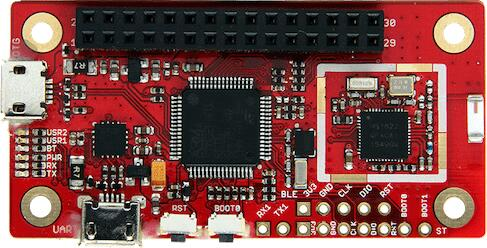

96Boards Carbon
Overview
The 96Boards is based on the STMicroelectronics STM32F401RET Cortex-M4 CPU and also contains a nRF51822 chip connected over SPI for BLE connectivity.
The 96Boards Carbon board is built with two chips: an STMicroelectronics STM32F401RET Cortex-M4 CPU and an nRF51822 chip connected to the Cortex-M4 CPU over SPI for Bluetooth LE connectivity. Even though both chips exist on the same physical board, they must be programmed separately:
The
96b_carbon/stm32f401xeconfiguration is used when developing programs for the main chip on the board, the STM32F401RET. Users will likely want to write applications targeting this chip, using the96b_carbonconfiguration, since it is connected to all of the breakout I/O headers.The
96b_carbon/nrf51822configuration should be used for programming the secondary nRF51822 chip. Most users will likely not develop applications for this chip, since Zephyr already provides a sample application that can be flashed onto the nRF51822 to provide Bluetooth functionality to applications on the main STM32F401RET chip.
For instructions on how to set up the nRF51822 to develop Bluetooth applications, see Providing Bluetooth to 96b_carbon.
After you have flashed your nRF51, you can perform basic validation of this Bluetooth setup using the instructions below.

96Boards Carbon
Hardware
96Boards Carbon provides the following hardware components:
STM32F401RET6 in LQFP64 package
ARM® 32-bit Cortex®-M4 CPU with FPU
84 MHz max CPU frequency
VDD from 1.7 V to 3.6 V
512 KB Flash
96 KB SRAM
GPIO with external interrupt capability
12-bit ADC with 16 channels
RTC
Advanced-control Timer
General Purpose Timers (7)
Watchdog Timers (2)
USART/UART (4)
I2C (3)
SPI (3)
SDIO
USB 2.0 OTG FS
DMA Controller
Bluetooth LE over SPI, provided by nRF51822
More information about STM32F401RE can be found here:
Supported Features
The Zephyr 96b_carbon/stm32f401xe board configuration supports the following
hardware features:
Interface |
Controller |
Driver/Component |
|---|---|---|
NVIC |
on-chip |
nested vector interrupt controller |
SYSTICK |
on-chip |
system clock |
UART |
on-chip |
serial port |
GPIO |
on-chip |
gpio |
PINMUX |
on-chip |
pinmux |
FLASH |
on-chip |
flash |
SPI |
on-chip |
spi |
I2C |
on-chip |
i2c |
USB OTG FS |
on-chip |
USB device |
More details about the board can be found at 96Boards website.
The default configuration can be found in boards/96boards/carbon/96b_carbon_stm32f401xe_defconfig
Connections and IOs
LED
LED1 / User1 LED = PD2
LED2 / User2 LED = PA15
LED3 / BT LED = PB5
LED4 / Power LED = VCC
External Connectors
Low Speed Header
PIN # |
Signal Name |
STM32F401 Functions |
|---|---|---|
1 |
UART2_CTS |
PA0 |
3 |
UART2_TX |
PA2 |
5 |
UART2_RX |
PA3 |
7 |
UART2_RTS |
PA1 |
9 |
GND |
GND |
11 |
USB5V |
USB5V |
13 |
AIN12 |
PC2 |
15 |
AIN14 |
PC4 |
17 |
UART6_TX |
PC6 |
19 |
GPIO |
PC8 |
21 |
I2C1_SCL |
PB6 |
23 |
I2C1_SCA |
PB7 |
25 |
I2C2_SCA |
PB3 |
27 |
I2C2_SCL |
PB10 |
29 |
RST_BTN |
RST_BTN |
PIN # |
Signal Name |
STM32F401 Functions |
|---|---|---|
2 |
SPI2_SS |
PB12 |
4 |
SPI2_MOSI |
PB15 |
6 |
SPI2_MISO |
PB14 |
8 |
SPI2_SCK |
PB13 |
10 |
GND |
GND |
12 |
VCC2 |
VCC2 |
14 |
AIN13 |
PC3 |
16 |
AIN15 |
PC5 |
18 |
UART6_RX |
PC7 |
20 |
GPIO |
PC9 |
22 |
I2C1_SCL |
PB8 |
24 |
I2C1_SDA |
PB9 |
26 |
AIN10 |
PC0 |
28 |
AIN11 |
PC1 |
30 |
NC |
NC |
More detailed information about the connectors can be found in 96Boards IE Specification.
External Clock Sources
STM32F4 has two external oscillators. The frequency of the slow clock is 32.768 kHz. The frequency of the main clock is 16 MHz.
Serial Port
96Boards Carbon board has up to 4 U(S)ARTs. The Zephyr console output is assigned to USART1. Default settings are 115200 8N1.
I2C
96Boards Carbon board has up to 2 I2Cs. The default I2C mapping for Zephyr is:
I2C1_SCL : PB6
I2C1_SDA : PB7
I2C2_SCL : PB10
I2C2_SDA : PB3
SPI
96Boards Carbon board has up to 2 SPIs. SPI1 is used for Bluetooth communication over HCI. The default SPI mapping for Zephyr is:
SPI1_NSS : PA4
SPI1_SCK : PA5
SPI1_MISO : PA6
SPI1_MOSI : PA7
SPI2_NSS : PB12
SPI2_SCK : PB13
SPI2_MISO : PB14
SPI2_MOSI : PB15
USB
96Boards Carbon board has a USB OTG dual-role device (DRD) controller that supports both device and host functions through its mini “OTG” USB connector. Only USB device functions are supported in Zephyr at the moment.
USB_DM : PA11
USB_DP : PA12
Programming and Debugging
There are 2 main entry points for flashing STM32F4X SoCs, one using the ROM bootloader, and another by using the SWD debug port (which requires additional hardware). Flashing using the ROM bootloader requires a special activation pattern, which can be triggered by using the BOOT0 pin. The ROM bootloader supports flashing via USB (DFU), UART, I2C and SPI. You can read more about how to enable and use the ROM bootloader by checking the application note AN2606, page 109.
Flashing
Installing dfu-util
It is recommended to use at least v0.8 of dfu-util. The package available in debian/ubuntu can be quite old, so you might have to build dfu-util from source.
Flashing an Application to 96Boards Carbon
Connect the micro-USB cable to the USB OTG Carbon port and to your computer. The board should power ON. Force the board into DFU mode by keeping the BOOT0 switch pressed while pressing and releasing the RST switch.
Confirm that the board is in DFU mode:
$ sudo dfu-util -l
dfu-util 0.8
Copyright 2005-2009 Weston Schmidt, Harald Welte and OpenMoko Inc.
Copyright 2010-2014 Tormod Volden and Stefan Schmidt
This program is Free Software and has ABSOLUTELY NO WARRANTY
Please report bugs to dfu-util@lists.gnumonks.org
Found DFU: [0483:df11] ver=2200, devnum=15, cfg=1, intf=0, alt=3, name="@Device Feature/0xFFFF0000/01*004 e", serial="3574364C3034"
Found DFU: [0483:df11] ver=2200, devnum=15, cfg=1, intf=0, alt=2, name="@OTP Memory /0x1FFF7800/01*512 e,01*016 e", serial="3574364C3034"
Found DFU: [0483:df11] ver=2200, devnum=15, cfg=1, intf=0, alt=1, name="@Option Bytes /0x1FFFC000/01*016 e", serial="3574364C3034"
Found DFU: [0483:df11] ver=2200, devnum=15, cfg=1, intf=0, alt=0, name="@Internal Flash /0x08000000/04*016Kg,01*064Kg,03*128Kg", serial="3574364C3034"
Found Runtime: [05ac:8290] ver=0104, devnum=2, cfg=1, intf=5, alt=0, name="UNKNOWN", serial="UNKNOWN"
You should see following confirmation on your Linux host:
$ dmesg
usb 1-2.1: new full-speed USB device number 14 using xhci_hcd
usb 1-2.1: New USB device found, idVendor=0483, idProduct=df11
usb 1-2.1: New USB device strings: Mfr=1, Product=2, SerialNumber=3
usb 1-2.1: Product: STM32 BOOTLOADER
usb 1-2.1: Manufacturer: STMicroelectronics
usb 1-2.1: SerialNumber: 3574364C3034
Then build and flash an application. Here is an example for the Hello World application.
# From the root of the zephyr repository
west build -b 96b_carbon/stm32f401xe samples/hello_world
west flash
Connect the micro-USB cable to the USB UART (FTDI) port and to your computer. Run your favorite terminal program to listen for output.
$ minicom -D <tty_device> -b 115200
Replace <tty_device> with the port where the board 96Boards Carbon
can be found. For example, under Linux, /dev/ttyUSB0.
The -b option sets baud rate ignoring the value from config.
Press the Reset button and you should see the following message in your terminal:
Hello World! arm
Verifying Bluetooth Functionality
This section contains instructions for verifying basic Bluetooth functionality on the board. For help on Zephyr applications in general, see Building an Application.
Flash the nRF51 with the hci_spi sample application as described in Providing Bluetooth to 96b_carbon.
Install the dfu-util flashing app, as described above.
Build and flash the
samples/bluetooth/peripheral_hrapplication for 96b_carbon. See the instructions above for how to put your board into DFU mode if you haven’t done this before:# From the root of the zephyr repository west build -b 96b_carbon/stm32f401xe samples/bluetooth/peripheral_hr west flash
Refer to the instructions in Heart-rate Monitor (Peripheral) for how to verify functionality.
Congratulations! Your 96Boards Carbon now has Bluetooth connectivity. Refer to Bluetooth for additional information on further Bluetooth application development.
Debugging
The 96b_carbon/stm32f401xe board can be debugged by installing a 100 mil (0.1 inch) header
into the header at the bottom right hand side of the board, and
attaching an SWD debugger to the 3V3 (3.3V), GND, CLK, DIO, and RST
pins on that header. Then apply power to the 96Boards Carbon via one
of its USB connectors. You can now attach your debugger to the
STM32F401RET using an SWD scan.